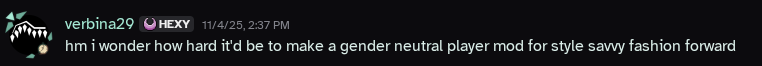
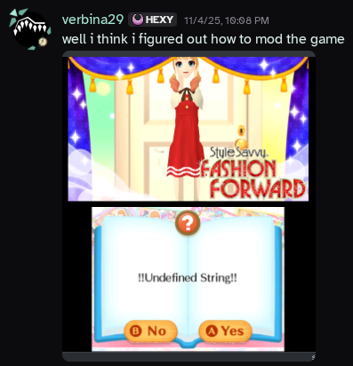
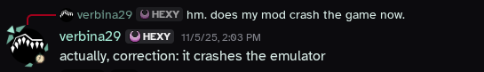
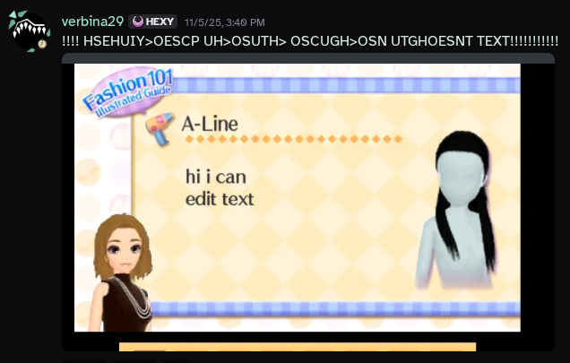
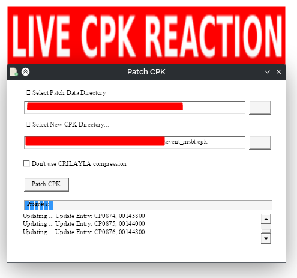

background
okay so basically i just got really pissed about the game calling you a woman and i, in my eternal naïveté, thought, "surely it can't be that hard to edit some text". oh you sweet summer child, past me. all of the tools for this aren't linux-native and are kind of terrible. this has been much pain and suffering. but hey now parts of the game no longer call me a woman. i'll release this gender-neutrality mod eventually but there are like 5k text files in this game and there is no good program right now to mass-edit. if i want to change all instances of a word i have to go through every single file individually. this shit fucking sucks. i don't know shit about reverse engineering, game modding, or whatever the hell these filetypes are, but it is my god-sent duty to make this fashion game targeted towards young girls woke and by god am i willing to learn to make that happen.
okay here's how i did it basically
and i did check to make sure all of this is reproducible because i didn't initially document my process, specifically so that i could write a blog post eventually! this general process probably works for some other games but i haven't tested because idc about those games. just like cut out the steps about ELPKs or CPKs if it's not a game that uses archives like that. also i'm on linux so i used most of these programs via Wine/Proton. also i don't know what i'm doing if this explodes your computer you can't sue me.
Sequences using ==> arrows are exact lists of the buttons to click on.
prerequisites
- Legally obtain a backup copy of the game. For legal reasons, I do not endorse pirating video games, but I'm sure we all know what that really means.
- Configure the emulator of your choice. I'm using Azahar, but other Citra forks should be basically the same.
- Set up the game in said emulator.
- If on Linux (or like a Mac I guess but that's worse), configure Wine or Proton or Bottles or something so that you can run Windows programs. Personally, I use umu-run, which is basically like Proton without using Steam, but it's kind of slow if you're just using CLI stuff, so I usually just use Wine for that stuff. Bottles is also good enough if you prefer GUIs.
- CriPakTools/CriPakGUI
- rELPKckr
- AeonSake's MSBT Editor. It has a linux-native version and a lot of really great features, like actual easily definable tag definitions! Yay!
- CpkPatcher
- A hex editor. I've been using ImHex but I don't know shit no idea if this one's any good it has dark mode and seemed to have the most features when i was looking for one.
- Know how to open a terminal.
- (Optional, but highly recommended.) ugrep
OKAY HERE'S THE REAL INSTRUCTIONS
- Dump the game's RomFS. In Azahar, this is simply right clicking on the game in the game list and clicking "Dump RomFS", and it automatically opens up the dumped RomFS for you. If you're modding the English version of the game, you likely want the EN folder, but for other languages you'll want the appropriate folder.
- You will notice that all of the files are
.cpk. Extract these using CriPakGUI.- Open CriPakGUI.
- File ==> Open CPK
- Navigate to wherever you put your CPK files or the RomFS dump and open the CPK you want to extract.
- Click "Extract Files"
- Navigate to wherever you want the extracted files and open that location.
- Wait patiently.
- Open whatever folder you extracted them to.
- Figure out what type of file these really are, using your hex editor. ELPK files will conveniently start with
ELPKin ASCII, while MSBT files will conveniently start withMsgStdBnin ASCII. Convenient! - If it's an ELPK, extract it via rELPKckr, using the command
wine rELPKckr.exe file, replacing "file" with the filename of the ELPK file. If you're on windows just like, remove the wine part, figure it out yourself i'm too sexy to use windows in 2025. - The extracted ELPK should contain MSBT files, so you can proceed to the next step.
- To more easily find the files you want to edit, you can run the command
ugrep --encoding=UTF-16LE -r "search", replacing "search" (keeping it in the quotes) with a term from the file you want to edit. Or suffer manually looking through 5k text files, I'm not going to tell you how to live. Unfortunately, MSBT Editor doesn't seem to have any way to search all the files in the loaded folder yet. - Edit the files you want to edit using MSBT Editor and save. I'm sure you can figure it out, it's just a text editor. You can define tags by making your own game config file if you want to edit the formatting. I've been working on one for Fashion Forward, but there's a lot of tags I still don't understand. But feel free to ask me for it anyway.
- If applicable, repack the ELPK file using rELPKckr. This is just
wine rELPKckr.exe folder, replacing "folder" with the name of the folder rELPKckr unpacked the ELPK to. - Patch the CPK file using CpkPatcher.
- Put your edited MSBTs or ELPKs in a folder with structure mirroring that of the CPK file. So if the CPK file has directories like
whatever.cpk/msbt/fileIwantToEdit, you'd need a directory likepatch/msbt/fileIwantToEdit, with the "patch" directory containing only the files you want to edit and the folders that those are contained in. - Run
wine CpkPatcher.exe sourceCPK patchDir outputCPK, replacing "sourceCPK" with the original, unedited CPK file, "patchDir" with the directory mirroring the CPK file's structure, and outputCPK with the filename and path to output to. - Right click the game, then press Mods Location under the Open menu.
- Create a folder called
romfs, and put your patched CPKs in it, mirroring the directory structure of the RomFS dump. For Style Savvy: Fashion Forward's US version's English language, this would beromfs/USA/EN. - Launch the game and hope it works.
if you came for fun technical details about this game or my gender neutrality mod sorry this is mostly just documentation for my hellworkflow.
this was originally a rant about how all the software for editing MSBT sucks but AeonSake's MSBT Editor finally got the native linux version a while ago and it's really kind of everything i wanted in an MSBT editor. easy to define what tags do, linux-native. i mean honestly that's basically all i wanted. truly a breath of fresh air. it's peak, dare i say. azahar still doesn't really have any good debugging tools unfortunately so that side still kinda sucks but i don't really need heavy debugging tools for editing text. this guide was originally using Kuriimu via Wine, but there's no real reason to do that now that MSBT Editor has a native Linux release. yay! software that's actually good!
anyway here's just the funny shit i said while figuring all of this out
did you know that Noor is white in the japanese version for some reason. isn't that fucked up. i just feel like i have to share that. anyway here's the start of my wafrn thread about this if you want to see my public liveposting.
{kind=link}

{kind=link}

{kind=link}

{kind=link}

{kind=link}

{kind=link}